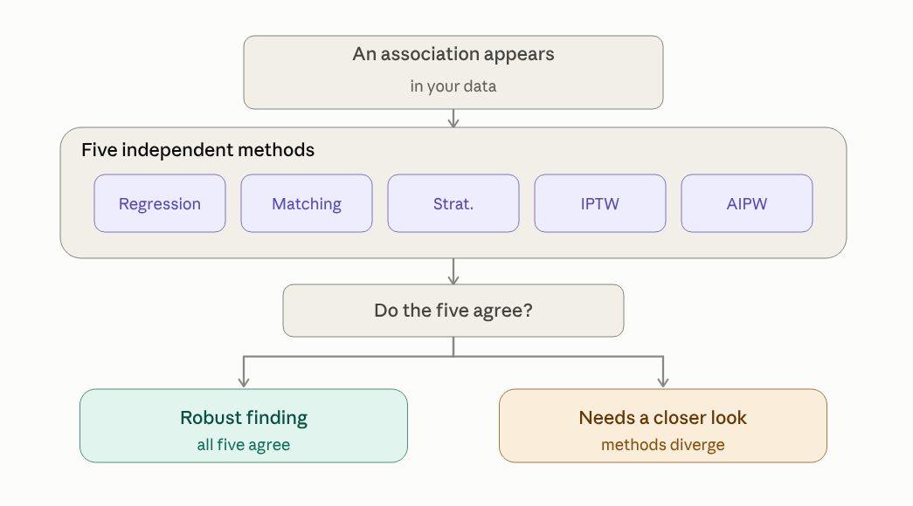
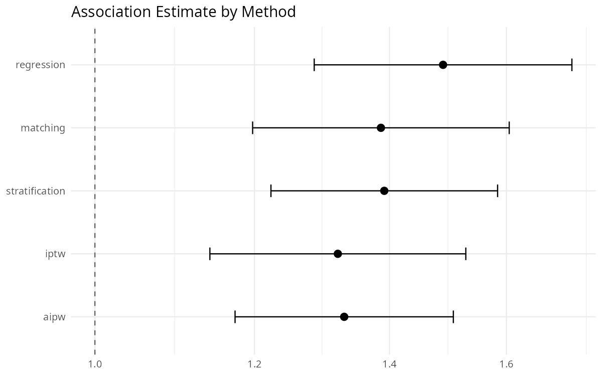

One function call. Five independent methods. Publication-ready confounder-adjusted associations.


Does an exposure–outcome association survive being tested through five distinct methods?
That’s the one question IndepAssoc is built to answer: is a risk factor genuinely associated with an outcome once other relevant factors are accounted for — or is the apparent link a statistical artifact of whichever method happened to be used? Rather than trusting a single model, the package runs the same association through five methods that each rely on different modeling assumptions, and reports plainly whether they agree. Agreement is a good sign. Disagreement is a prompt to look closer before writing anything up.

Installation
# install.packages("remotes")
remotes::install_github("mostafa-abbas/IndepAssoc")Alternatively, install from source with the package checked out locally:
install.packages("devtools")
devtools::install()causaldata is additionally needed to build the causal-benchmarks vignette (it supplies the NHEFS data); every other dependency, including MatchIt, installs automatically with the package, and the other three vignettes need nothing beyond that.
A Quick Refresher on the Methods
Here is a quick one-sentence summary of what each method does:
- Regression — builds a model of the outcome that includes the exposure and the other factors at once, then reports the exposure’s association with the outcome after holding the other factors fixed.
- Matching — pairs each exposed person with an otherwise similar unexposed person and compares outcomes within the pairs.
- Stratification — groups people with similar backgrounds, compares exposed and unexposed within each group, then pools the comparisons.
- IPTW (inverse probability of treatment weighting) — gives each person a weight so the exposed and unexposed groups look alike on the other factors, then compares the weighted groups.
- AIPW (augmented IPTW) — combines the IPTW reweighting with an outcome regression; it is doubly robust, so the estimate stays reliable if either the propensity model or the outcome model is correctly specified, not necessarily both.
What it is — and what it is not
What it is: a pipeline that tests whether an exposure is independently associated with an outcome — adjusting for confounding via five distinct methods — and produces publication-ready tables and effect estimates with minimal code.
What it is not: proof of causation. The package reports confounder-adjusted associations; it does not establish causal effects. IPTW and AIPW are causal- inference estimators, but their output represents a causal effect only if the identifiability assumptions hold: no unmeasured confounding, positivity (every covariate pattern has a nonzero chance of both exposure levels), and — for IPTW in particular — a correctly specified propensity model. An association — however robust across methods — is not a causal effect, and the package does not claim otherwise.
What “all five methods agree” does and does not tell you. Cross-method agreement is evidence against estimator-specific bias — a finding that survives five different modeling assumptions is unlikely to be an artifact of how any one of them was specified. It is not evidence against unmeasured confounding: all five methods adjust for the same covariate set, so an important confounder left out of that set would bias all five in the same direction, and agreement across them would look identical to a genuine effect. Agreement rules out specification-dependent artifacts; it cannot rule out a shared blind spot in the confounder list.
How it works
library(IndepAssoc)
data(example_cohort)
set.seed(1)
res <- run_pipeline(
data = example_cohort,
exposure = "exposure",
covariates = c("age", "diabetes", "hypertension", "bmi"),
outcome = "outcome_continuous",
type = "continuous",
methods = c("regression", "matching", "stratification", "iptw", "aipw")
)
format_comparison(res$comparison)example_cohort is a fully simulated dataset shipped with the package (see Datasets) — it carries no patient information of any kind, and exists purely so the pipeline can be run end-to-end on the first try. format_comparison() rounds the raw $comparison data frame into the publication-ready table below. Here matching is propensity-score matching with conditional-logit/paired estimation (conditional logistic regression stratified by matched pair for binary outcomes, a within-pair fixed-effects linear model for continuous outcomes).
Method Mean Diff 95% CI p-value n
1 Regression 1.54 0.59–2.48 0.001 500
2 Matching 2.15 0.95–3.34 <0.001 324
3 Stratification 1.58 0.45–2.71 0.006 500
4 IPTW 1.38 -0.05–2.81 0.059 500
5 AIPW 1.48 0.51–2.46 0.003 500The five methods target related but distinct estimands, so their point estimates are not expected to match exactly even under correct specification:
| Method | Estimand | Pooling / SE |
|---|---|---|
| Regression | Conditional (covariate-adjusted) effect | Model-based Wald SE |
| Matching | ATT | Conditional logit (binary) / within-pair fixed-effects OLS (continuous) |
| Stratification | ATE or ATT (5 propensity-score strata by default) | Binary+ATE: Cochran–Mantel–Haenszel; other cases: inverse-variance- or treated-count-weighted pooling across strata |
| IPTW | ATE (stabilized weights) or ATT (SMR weighting) | Sandwich (HC0) SE on the weighted outcome model |
| AIPW | ATE or ATT | Empirical influence-function variance (doubly robust) |
matching targets the ATT by construction; iptw and aipw default to the marginal ATE over the full analytic sample; stratification’s pooling rule depends on the outcome type and estimand rather than being a single fixed formula; regression reports a conditional effect, and for binary outcomes the odds ratio is non-collapsible, so it is not numerically equal to a marginal ATE. Agreement across the five is still meaningful robustness evidence, but they are related quantities, not five copies of one number. Full derivation of each method’s variance and pooling rule is in the technical vignette.
A worked example of why this matters: the IPTW row above is the one result close to the significance threshold. IPTW weights are not trimmed by default. Re-running the same call with light trimming of extreme weights (fit_outcome(..., method = "iptw", trim = 0.01)) moves the estimate from 1.38 (95% CI −0.05 to 2.81, p = 0.059) to 1.58 (95% CI 0.20 to 2.95, p = 0.025) — the same data, the same model, a materially different conclusion. This is exactly why the diagnostics below exist: a borderline p-value on a weighted estimator is a prompt to look at the weight distribution before reporting it, not to report it as-is.
Data requirements: the exposure, every covariate, and the outcome must be complete. run_pipeline() and fit_outcome() error immediately if any required column has missing values, naming the column and the count — neither function drops rows or imputes silently. Handle missing data first (complete-case, single imputation, or multiple imputation with the full pipeline re-run and pooled via Rubin’s rules) before calling either function.
Diagnostics
Every call to run_pipeline() automatically computes propensity-score positivity and covariate balance — no extra step required. They’re worth checking before trusting any of the five effect estimates:
check_positivity(res$ps_model)
check_balance(res$matched)
res$balance_plot # ggplot Love plot: ASMD before vs. after matchingHere’s what that looks like on the quickstart example above — summary(res) reports it plainly:
Balance check: FAILEDThe post-match ASMD on the propensity-score distance itself is 0.157, above the default 0.1 threshold, even though all four individual covariates balance well (0.006–0.076). That doesn’t invalidate the other four methods’ estimates, but it’s a direct, honest signal that this particular match deserves scrutiny — a tighter caliper or an expanded propensity model, and the matching-based estimate reported alongside, not instead of, the other four. This is what the diagnostics are for, and the package surfaces it without being asked.
A real-world validation
The same pipeline was run on the Right Heart Catheterization (RHC) cohort from the SUPPORT study (Connors et al., JAMA, 1996) — a long-standing, publicly available benchmark in the causal-inference literature, also distributed via the causaldata R package and the Vanderbilt Department of Biostatistics. No hospital, health-system, or proprietary patient-level data was used at any stage of development or testing — every dataset behind these results, including the two further benchmarks below, is public.
On 5,735 patients, adjusting for 50 confounders, all five methods independently found RHC associated with increased 30-day mortality (ORs 1.3–1.5, all CIs excluding 1):

Agreement on a well-characterized public benchmark shows the pipeline reproduces an established finding on real clinical data, not only simulated cohorts. Full analysis — balance checks, matching diagnostics, and sensitivity checks — is in the rhc-validation vignette.
The pipeline has also been checked against two further classic causal-inference benchmarks with known results, in the causal-benchmarks vignette. On the NHEFS smoking-cessation cohort (Hernán & Robins), all five methods converge on both outcomes tested — the strong form of validation. On the Lalonde job-training dataset (Dehejia & Wahba), only matching recovers the known experimental benchmark closely; IPTW and AIPW diverge from it. That’s expected, not a failure: Lalonde’s non-experimental comparison group is a known, textbook case of poor covariate overlap between treated and control units, and matching — not IPTW or AIPW — is the estimator this specific benchmark is understood to favor. The methods disagreeing exactly where overlap theory predicts they should is, if anything, a more convincing result than agreement everywhere would be.
Package testing & CI
(Not to be confused with the empirical validation above — this section describes software correctness, not a clinical finding.)
The package has 631 passing unit tests and passes R CMD check cleanly (0 errors, 0 notes; one environmental warning — qpdf not installed on the test machine — unrelated to package code). Correctness is checked against example_cohort (simulated, known ground-truth treatment effect) and three public benchmarks with independently known results: rhc_sample, NHEFS, and Lalonde (above).
Datasets
Two datasets ship with the package, and both are either fully simulated or fully public — no proprietary, institutional, or identifiable patient data is included:
-
example_cohort— a simulated 500-row cohort with a known treatment effect, generated programmatically for quick, reproducible runs of the full pipeline. -
rhc_sample— a cleaned copy of the public Right Heart Catheterization (RHC) cohort from the SUPPORT study (5,735 rows, 50 confounders), the basis of therhc-validationvignette. This dataset is a widely used, openly available benchmark in the causal-inference methods literature; it is a confounder-adjusted association benchmark, not a proof of causality (see?rhc_samplefor provenance and variable definitions).
Both are lazy-loaded via data(); the generation and cleaning scripts live in data-raw/ (simulate_example_cohort.R, prepare_rhc.R) and are excluded from the installed package. prepare_rhc_data(path) is also exported for anyone working with a fresh raw RHC CSV rather than the bundled rhc_sample — it resolves the source file’s known quirks (a stray write.csv row-names column, "NA" stored as literal text, and a text-coded exposure/outcome) into the typed, numeric-encoded data frame the pipeline expects.
Reproducibility
Matching-based results draw on the random number generator, so a fixed seed is required to reproduce them exactly. Set it explicitly — run_pipeline(..., seed = N) or, for direct matching, match_cohort(..., seed = N) — and reuse the same seed value to obtain identical results.
Published Research
IndepAssoc is the packaged form of the analysis pipeline used in two published retrospective cohort studies from the same author group: Female sex is associated with short-term mortality in coronary artery bypass grafting patients: A propensity-matched analysis (Heliyon, 2025) and Atrial appendage closure is associated with increased risk for postoperative atrial fibrillation (Journal of Cardiothoracic Surgery, 2024). Both studies used the same propensity-score workflow — a logistic propensity-score model, 1:1 nearest-neighbor matching, ASMD balance checks, paired descriptive tests, and conditional outcome models — which this package generalizes into a reusable interface with five confounding-adjustment methods. The source cohorts underlying those two publications are not distributed with this package; only the simulated and public benchmark datasets described above are.
Getting Help
- Bug reports & feature requests: Open an issue
- Usage questions: clinician walkthrough, quick-start guide, or benchmark validation (RHC, NHEFS, Lalonde)
-
Citing this package: see
CITATION.cff, or runcitation("IndepAssoc")in R